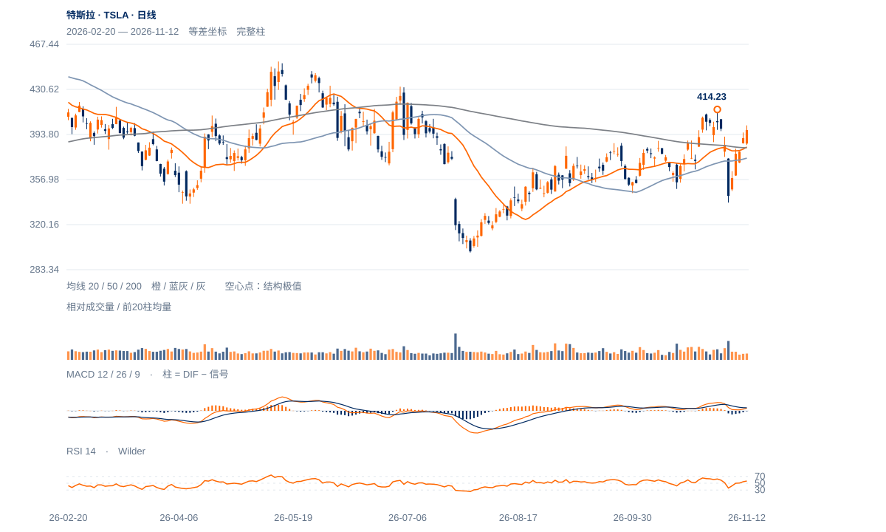

原修复条件实际完成
11日收390.84高于388.56及当日200日线383.03，12日收397.45高于388.56及当日382.86；原连续两日双条件通过，不能再写成未确认。
未来1—5日偏向修复延续并检验401—414供应，385—389的保持是基础；1—3周改善已出现，尚未确认越过原高位。

查看大图 ↗11日收390.84高于388.56及当日200日线383.03，12日收397.45高于388.56及当日382.86；原连续两日双条件通过，不能再写成未确认。
11日上缺口380.00—386.35，12日低385.20进入但未完全填到380.00，收397.45在其上。12日收盘位置76.5%，向上跟进仍在。
上方10月28日410.85与11月2日414.23仍未突破；12日量比0.71、20日OBV方向余额仅0.015。价格改善成立，但尚未出现与新高扩展匹配的需求证据。
截至11月6日完整周收358.22仍低于10/30周均线，且修复量能偏低；若385.20失守并回到380之下，当前延续解释会明显减弱。